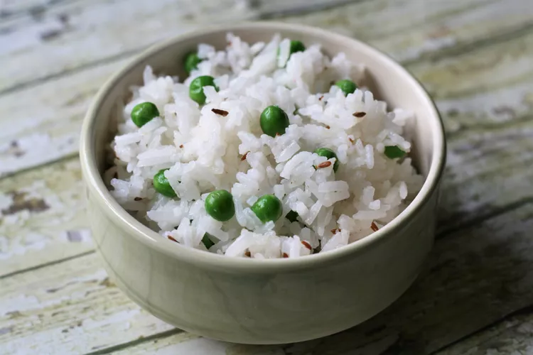

Basmati rice

The best rice you will ever eat.
Ingredients
- 1 and 3/4 cups of water
- 1 cup of basmati rice
- 1/4 cup frozen green peas
- 1 teaspoon cumin seed
Steps
- In a saucepan bring water to a boil. Add rice and stir. Reduce heat, cover and simmer for 20 minutes.
- When rice is cooked, stir in peas and cumin. Cover and let stand for 5 minutes
- Enjoy